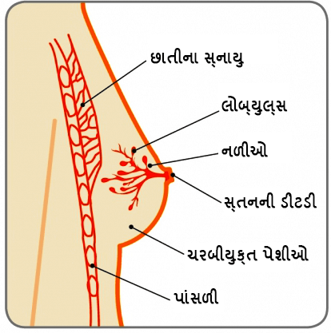
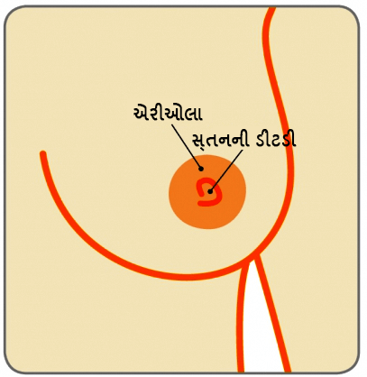

સ્તનના સ્વાસ્થ્યના સૌમ્ય મુદ્દાઓ
ફાઇબ્રોએડેનોમા
પ્રિયા (નામ બદલાવેલ), એક 28 વર્ષની સ્ત્રીને તેણીના જમણા સ્તનમાં એક હલન-ચલન કરતી ગાંઠ ધ્યાનમાં આવેલી.
ફાઇબ્રોએડેનોમા એ શું છે?
સ્તન એ નળીઓ (એવી નળીઓ કે જે ડિંટ્ડી સુધી દૂધનું વહન કરે છે) અને લોબ્યુલ્સ (દૂધનું ઉત્પાદન કરતી ગ્રંથીઓ)થી બનેલા હોય છે, જેની આસપાસ ચરબીની અને સહાયક કોષપેશીઓ આવેલી હોય છે. કેટલીક વખત એક લોબ્યુલની ઉપર એક કોષપેશી દડાની જેમ વૃદ્ધિ પામી શકે છે, જેનાથી એક સખત ગાંઠ બને છે. આ એક ફાઇબ્રોએડેનોમા છે. આ સ્તનમાં થતી સૌથી સામાન્ય સૌમ્ય (કેન્સરના હોય તેવી ગાંઠોની) સ્થિતિ છે
સ્તન

ડિંટડી

ફાઇબ્રોએડેનોમા શેના કારણે થાય છે?
એવું વિચારવામાં આવે છે કે તેઓ સ્ત્રીઓના હોર્મોન એસ્ટ્રોજનની વધેલી સંવેદનશીલતાને કારણે થઈ શકે છે.
ફાઇબ્રોએડેનોમાના પ્રકાર ક્યા ક્યા છે?
સાદું ફાઇબ્રોએડેનોમામોટાભાગના ફાઇબ્રોએડેનોમાનું કદ 1-3 સેન્ટીમીટરનું હોય છે અને તેને સાદાં ફાઇબ્રોએડેનોમા કહે છે. સાદા ફાઇબ્રોએડેનોમાને કારણે ભવિષ્યમાં સ્તનનું કેન્સર થવાનું જોખમ વધતું નથી.
જટીલ ફાઇબ્રોએડેનોમાકેટલાંક ફાઇબ્રોએડેનોમાને જટીલ ફાઇબ્રોએડેનોમા કહેવામાં આવે છે. જટીલ ફાઇબ્રોએડેનોમાને લીધે બહુ ઓછી માત્રામાં ભવિષ્યમાં સ્તનનું કેન્સર થવાના જોખમને વધારે છે.
મહાકાય અથવા જુવેનાઇલ ફાઇબ્રોએડેનોમાપ્રસંગોપાત, એક ફાઇબ્રોએડેનોમાઅ 5 સેમી. થી વધુ કદમાં વૃદ્ધિ પામી શકે છે અને તેને કદાચ મહાકાય ફાઇબ્રોએડેનોમા કહી શકાય. તરૂણાવસ્થાની છોકરીઓમાં જોવા મળતા ફાઇબ્રોએડેનોમાને જુવેનાઇલ ફાઇબ્રોએડેનોમા કહેવાય છે.
શું તે સૌમ્ય (જીવલેણ ના હોય તેવા) છે?
મોટાભાગના ફાઇબ્રોએડેનોમા સૌમ્ય (જીવલેણ ના હોય તેવા) હોય છે અને તેનાથી સ્તનના કેન્સર થવાના જોખમમાં વધારો થતો નથી. જટીલ ફાઇબ્રોએડેનો એ જીવલેણ થઈ શકે તેવી એક નાની શકયતા છે.
એક ફાઇબ્રોએડેનોમાનો કેવો અનુભવ થાય છે અને સામાન્ય રીતે તે કઈ ઉંમર પર થાય છે?
એક ફાઇબ્રોએડેનોમા એ સામાન્ય રીતે રબ્બર જેવી સપાટી ધરાવતો હોય છે, જે સ્પર્શ કરવાથી સુંવાળો લાગે છે અને ચામડીની નીચે સરળતાથી હલન-ચલન પામે છે. આ કારણ માટે કેટલીક વખત તેને એક “સ્તનના ઉંદર” તરીકે પણ ઓળખવામાં આવે છે. ફાઇબ્રોએડેનોમાઝ એ સામાન્ય રીતે દુ:ખાવા રહિત હોય છે.
ફાઇબ્રોએડેનોમાઝ એ બહુ સામાન્ય હોય છે અને તે એક થી વધુ હોવા એ અસામાન્ય નથી. તે મોટા ભાગે તરૂણાવસ્થામાં વિકાસ પામે છે અને તેથી મોટાભાગે યુવાન સ્ત્રીઓમાં જોવા મળે છે, જો કે તે કોઈપણ ઉંમરની સ્ત્રીને થઈ શકે છે. મોટાભાગના ફાઇબ્રોએડેનોમાઝ આશરે 1 થી 3 સેન્ટીમીટરના હોય છે અને તેને સામાન્ય ફાઇબ્રોએડેનોમા કહેવામાં આવે છે. તેમાંથી કેટલાંક 5 સેન્ટીમીટરથી વધુ વૃદ્ધિ પામી શકે છે અને તેને મહાકાય ફાઇબ્રોએડેનોમ કહેવમાં આવે છે. તરૂણાવસ્થાની છોકરીઓમાં જોવા મળતાં ફાઇબ્રોએડેનોમાઝને જુવેનાઇલ ફાઇબ્રોએડેનોમાઝ કહેવામાં આવે છે.
જો એક ફાઇબ્રોએડેનોમાની સારવાર ના કરવામાં આવે તો તે વૃદ્ધિ પામી શકે છે?
મોટાભાગના ફાઇબ્રોએડેનોમાઝ સમાન કદના રહે છે. એક નાની સંખ્યામાં ફાઇબ્રોએડેનોમા મોટા થાય છે. પ્રસૂતિના સમયે તથા સ્તનપાન કરાવતી વખતે ફાઇબ્રોએડેનોમા મોટા થઈ શકે છે. આવું થવું એ બહુ સામાન્ય વાત છે અને ચિંતા કરવાની કોઈ જરૂર નથી.
એક ફાઇબ્રોએડેનોમાનું નિદાન કઈ રીતે કરવામાં આવે છે?
ફાઇબ્રોએડેનોમા સામાન્ય રીતે એ સ્તનમાં એક ગાંઠ તરીકે ધ્યાનમાં આવે છે. એક નિષ્ણાત સાથે પરામર્શ આવશ્યક છે અને ત્રણ અલગ-અલગ પરિક્ષણ કરાવવા આવશ્યક છે, જેને મોટાભાગે ત્રિવિધ મૂલ્યાંકન તરીકે સંદર્ભિત કરાય છે, જેથી એક નિશ્ચિત નિદાન કરી શકાય. આમાં એક દવાખાનામાં પરિક્ષણ, એક મેમોગ્રમ (સ્તનનો એક્સ-રે) અને અલ્ટ્રાસાઉન્ડ (જેમાં હાઇ-ફ્રિક્વેન્સી સાઉન્ડ વેવ્ઝનો ઉપયોગ કરીને એક ચિત્ર બનાવવામાં આવે છે) અને એક અલ્ટ્રાસાઉન્ડના માર્ગદર્શના હેઠળ સોય ભરાવીને એ ગાંઠની બાયોપ્સી કરવામાં આવે છે.
એક સોયના પરિક્ષણ સાથે શું સંકળાયેલું છે અને શું એફ.એન.એ.સી એ કોર બાયોપ્સી જેવું જ હોય છે?
એક સોયથી પરિક્ષણ કરવાની બે રીત છે. સૌ પ્રથમ છે ફાઇન નીડલ એસ્પાઇરેશન સાઇટોલોજી (એફ.એન.એ.સી.). એક એફ.એન.એ.સી.માં એ ગાંઠમાંથી કોષોનો એક નમૂનો લેવાઅ માટે એક સાવ જીણી સોય અને સિરિન્જનો ઉપયોગ કરવામાં આવે છે.
સમગ્ર વિશ્વમાં મોટાભાગના ખાસ કેન્દ્રો હવે એક એફ.એન.એ.સી. કરવાને બદલે કોર નીડલ બાયોપ્સી કરે છે. એક કોર બાયોપ્સી એક વધુ મોટી સોયનો ઉપયોગ કરે છે અને તેનાથી માત્ર કોષોને એકત્રિત કરવાને બદલે સ્થાનિક એનેસ્થેશિયા આપીને કોષપેશીનો એક નાનો નમૂનો લેવામાં આવે છે. આ એક વધુ વિશ્વસનીય અને ચોક્કસાઇ ભરેલ નિદાન છે.
એક ફાઇબ્રોએડેનોમાનું સંચાલન કઈ રીતે થાય છે?
ઉપર દર્શાવ્યા પ્રમાણે જો એક કોર બાયોપ્સી સહિત એ ત્રિવિધ મૂલ્યાંકન દ્વારા એક ફાઇબ્રોએડેનોમા હોવાની પુષ્ટી મળી હોય, તો એ સ્ત્રીને ખાત્રી આપી શકાય છે કે તે ગાંઠ એ એક કેન્સર નથી અને તેનાથી કેન્સર થશે નહીં.
જો એ ફાઇબ્રોએડેનોમાનું કદ 2 સેમી. થી નાનું હોય, તો તેને એકલો છોડી શકાય છે અને બે કે ત્રણ મહિને અનુવર્તી અલ્ટ્રાસાઉન્ડ કરી શકાય છે જેથી એ ખાત્રી કરી શકાય કે તે મોટો થયો નથી. જો તેના કદમાં ફેરફાર ના થયો હોય, તો એ દર્દીને અનુવર્તી પગલાંઓમાંથી મુક્તિ આપી શકાય છે. કેટલીક સ્ત્રીઓને એ ગાંઠ રાખવી ગમતી નથી, એવા કિસ્સામાં એ ગાંઠને દૂર કરી શકાય છે.
જો એ ગાંઠ મોટી થતી હોય, દુ:ખાવો કરતી હોય, અથવા એ ગાંઠ 3 સેમી. થી મોટી હોય અથવા તે એક જટીલ ફાઇબ્રોએડેનોમા હોવાનું કોર નીડલ બાયોપ્સીમાં સાબિત થયું હોય, તો એ ફાઇબ્રોએડેનોમાને દૂર કરવા માટે શસ્ત્રક્રિયાની સલાહ આપવામાં આવે છે. એ શસ્ત્રક્રિયા સામાન્ય એનેસ્થેટિક હેઠળ કરવામાં આવે છે, અને એ દર્દીને એક દિવસ અથવા રાત્રી માટે કદાચ હોસ્પીટલમાં રહેવાની જરૂર પડી શકે છે.
શસ્ત્રક્રિયાની તકનિકોમાં પ્રગતિ થવાની સાથે (ઓંકોપ્લાસ્ટિક બ્રેસ્ટ સર્જરી), એરોલાની કોર પર છેકો પાડીને આ ઓપરેશન થઈ શકે છે (સર્ક્યુમએરોલર ઇનસિઝન) જેથી એક સાવ ઓછો દેખાય તેવા ઉઝરડા સાથેનું શ્રેષ્ઠ બાહ્ય દેખાવનું પરિણામ આપી શકાય છે અને તે ઉઝરડો પણ સમય પસાર થતાં ગૂમ થઈ જશે. સારા સૌંદર્યલક્ષી પરિણામને સુનિશ્ચિત કરીને ઓપરેશન પછી સ્તનમાં કોઈપણ જાતની ખામી રહેવી જોઈએ નહીં.